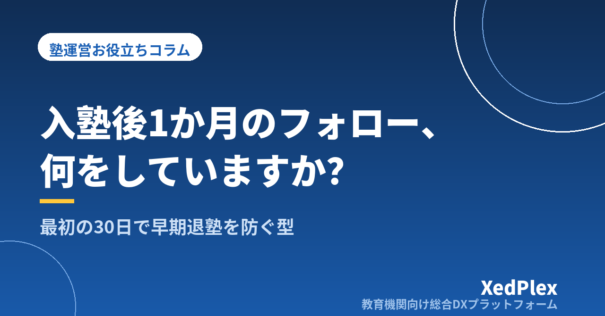

入塾後1か月のフォローで早期退塾を防ぐ｜最初の30日にやること・保護者への連絡・記録を型にする

体験授業も入塾面談もうまくいき、「よろしくお願いします」と入塾してくれた生徒。ところが2〜3か月たったころ、保護者から「部活が忙しくなったので」「少し様子を見たいので」と退塾の連絡が来る。理由を聞いてもはっきりせず、思い返すと入塾後はほとんど保護者と話していなかった──個人塾・小規模塾の塾長から、よく聞く話です。
入塾までは丁寧に対応していても、入塾した瞬間に「在籍生のひとり」として通常運転に入ってしまう。塾長ひとりで授業も事務も回していれば、無理もないことです。ただ、保護者と生徒にとって入塾直後の1か月は、「この塾を選んで良かったか」を確かめている期間でもあります。この記事では、入塾後最初の30日を仕組みで回すために、入塾時に決めること、フォローの予定表、保護者への連絡、記録と共有の型を整理します。
入塾後1か月は「見られている期間」と考える
入塾直後の生徒と保護者は、まだ塾に対して「慣れ」も「信頼の貯金」もありません。そのため、ふだんなら気にならない小さな出来事が、判断材料として大きく受け取られがちです。
- 生徒側：授業の進み方についていけるか、先生と話しやすいか、教室の雰囲気になじめるか。不安があっても、自分からは言い出しにくい時期です。
- 保護者側：本当に通っているか、塾で何をしているか、家での様子は変わったか。入塾前の説明と実際が合っているかを、無意識に確かめています。
- 塾側：生徒の性格や学力の細かいところがまだ分からず、講師ごとに把握の度合いがばらつきやすい時期です。
早期の退塾は、この時期に生まれた小さな「思っていたのと違う」が、誰にも拾われないまま積み重なった結果であることが少なくありません。逆に言えば、最初の1か月に「見ています」「伝えています」という接点を意図的に置くだけで、防げる退塾は確実にあります。在籍生全体の保護者コミュニケーションについては「退塾を防ぐ保護者コミュニケーションの仕組み」で整理していますが、本記事はその「入口」の部分を扱います。
入塾時に決めておく「最初の30日」の3つの合意
フォローの土台になるのは、入塾手続きの時点で保護者・生徒と交わしておく小さな合意です。ここが曖昧だと、1か月後に何をもって「順調」と言えばいいのか分からなくなります。入塾面談の最後に、次の3点を確認してメモに残しておきましょう。
| 合意すること | 確認する内容の例 |
|---|---|
| 1. 通塾のリズム | 曜日・時間、部活や習い事との兼ね合い、自習室を使うかどうか、欠席時の連絡方法 |
| 2. 最初の1か月の目標 | 「英語の授業に毎回ついていけるようになる」「数学の計算ミスを減らす」など、1か月で確かめられる小さな目標を1つ |
| 3. 連絡の受け取り方 | 塾からの連絡がどの手段で届くか、相談したいときの窓口、1か月後に様子を伝える面談や電話の予定 |
とくに2つ目の目標は、「成績を上げる」のような大きな話ではなく、1か月後に「できた／まだ」と言える粒度にするのがポイントです。入塾時の学力把握のやり方は「塾の入塾時に生徒の学力・つまずきを把握する方法」も参考にしてください。診断の結果から目標を1つ選ぶと、話が具体的になります。
3つ目の「1か月後に様子を伝えます」という予告も大切です。先に約束しておくと、保護者は「何かあれば言ってもらえる」と安心でき、塾側も予定として忘れずに実行できます。
最初の30日のフォロー予定表
合意ができたら、入塾日を起点にフォローの予定を入れてしまいます。毎回その場で考えるのではなく、新しい生徒が入るたびに同じ予定表を当てはめるのが、仕組み化の要です。
| 時期 | 生徒へ | 保護者へ | 塾内（講師間） |
|---|---|---|---|
| 初回授業の日 | 授業後に一言声をかけ、困ったことがないか聞く | 初回の様子を短く連絡 | 担当講師に生徒の基本情報と「最初の目標」を共有 |
| 1週目の終わり | 席・教材・宿題の量に無理がないか確認 | （必要に応じて）通塾リズムの確認 | 授業ごとの様子を記録 |
| 2週目 | 小さな「できた」を本人に言葉で返す | 具体的なエピソードを1つ添えて連絡 | 宿題・遅刻・表情などの変化を確認 |
| 4週目（1か月） | 目標の振り返りと次の目標づくり | 面談または電話で1か月の報告 | 「新入塾生フォロー」を終えるか延長するか判断 |
初回授業の日：「来てよかった」で帰す
初回は内容よりも、生徒が「なんとかなりそう」と思って帰れることを優先します。授業の最後に「今日わからなかったところ、ある？」「宿題の量はどう？」と一言聞くだけで十分です。保護者への連絡も、その日のうちに2〜3行で構いません。
2週目：具体的なエピソードを1つ伝える
入塾から2週間ほどたつと、生徒の様子が少し見えてきます。「頑張っています」という抽象的な報告ではなく、「〇〇の単元で、最初は手が止まっていましたが、3回目の授業では自分で解き方を説明できました」のように、塾でしか見えない具体的な場面を1つ伝えると、保護者は「ちゃんと見てもらえている」と感じます。
4週目：1か月の振り返りと次の目標
入塾時に約束した「1か月後の報告」を実行します。対面の面談が難しければ、10分程度の電話でも構いません。最初の目標がどうだったか、通塾リズムに無理はないか、家庭で気になることはないかを確認し、次の1か月の目標を1つ決めます。面談の進め方は「塾の生徒面談のやり方」や「保護者面談の準備を1時間で終わらせる方法」も参考になります。
保護者への連絡は「最初の3回」を決めておく
保護者連絡の頻度は、多すぎても少なすぎても不安を招きます（詳しくは「塾の保護者連絡、適切な頻度は？」）。ただ、入塾直後に限っては、ふだんより少し手厚くしたほうが安心につながります。おすすめは、初回授業の日・2週目・1か月の3回をあらかじめ決めておくことです。文面も型にしておけば、毎回考える必要はありません。
- 初回授業の日：「本日、初回の授業を終えました。最初は緊張していた様子でしたが、後半は質問もしてくれました。宿題は〇ページ分お渡ししています。ご家庭で気になることがあれば、いつでもお知らせください。」
- 2週目：「入塾から2週間がたちました。〇〇の単元で、自分で解き方を説明できる場面がありました。次は△△に取り組む予定です。」
- 1か月：「入塾時にお話しした『〇〇』の目標について、1か月の様子をお伝えしたく、〇日〜〇日の間で10分ほどお時間をいただけますでしょうか。」
入退室の記録や出席状況を保護者が確認できる仕組みがあれば、「ちゃんと通っているか」という不安は連絡を待たずに解消できます。そのうえで、塾からの連絡は「様子」と「次の一手」に絞れるため、文面も短く済みます。通塾の見える化については「『ちゃんと通っているか』を保護者に見せる塾の仕組み」で詳しく書いています。
記録と講師間の共有で「気づける塾」にする
塾長がすべての授業を担当していない場合、新入塾生の様子は講師ごとにばらばらに把握されがちです。最初の1か月だけは、「新入塾生フォロー中」の生徒を一覧にして、全員が同じ情報を見られる状態にしておきましょう。
新入塾生フォロー一覧に載せる項目
- 入塾日と、フォロー終了予定日（入塾日から約1か月後）
- 入塾時の3つの合意（通塾リズム・最初の目標・連絡方法）
- 保護者への連絡予定と、実施したかどうか
- 授業ごとのひとことメモ（できたこと・つまずき・表情）
早めに声をかけたい変化のサイン
| サイン | 考えられる背景と対応 |
|---|---|
| 遅刻・欠席が続く | 通塾リズムが生活に合っていない可能性。曜日や時間の見直しを保護者と相談する |
| 宿題が続けて未提出 | 量や難易度が合っていない可能性。叱る前に量を調整する（宿題の仕組み化も参照） |
| 授業中に質問が出ない・表情が硬い | 授業の進度についていけていない、または講師との相性。担当講師と様子を共有する |
| 保護者からの問い合わせが増える | 家庭で不安が大きくなっているサイン。予定を前倒しして電話や面談を入れる |
記録は長文である必要はありません。授業後に1〜2行残すだけでも、1か月たつと十分な振り返り材料になります。記録の残し方は「塾の生徒記録（日誌）を残す習慣と活かし方」や「保護者に伝わる塾の指導報告書の書き方」も参考にしてください。
まとめ：入塾はゴールではなく、最初の30日の始まり
早期退塾を防ぐために、特別なイベントや大きな工夫は必要ありません。大切なのは次の3つを「毎回同じ型」で回すことです。
- 入塾時に3つの合意をとる：通塾リズム・最初の1か月の目標・連絡の受け取り方
- 30日間のフォロー予定を入れてしまう：初回授業の日・2週目・1か月の接点を、入塾日を起点に決める
- 記録して共有し、変化に早く気づく：新入塾生フォロー一覧で、講師全員が同じ情報を見る
体験授業から入塾までの流れを整えている塾ほど、入塾後の1か月が「空白」になりやすいものです。体験授業から入塾への導線や講習生の入塾案内とあわせて、「入塾後の30日」まで含めてひとつの流れとして設計してみてください。まずは次に入塾する生徒から、予定表を1枚用意するところから始めましょう。
この記事を書いた運営より
私たちは、個人経営・小規模の学習塾向けに、生徒管理・QRコードでの入退室記録・月次請求・保護者へのLINE/メール通知・AIによる学習支援までをひとつにまとめた教育機関向け総合DXプラットフォーム「XedPlex（ゼドプレックス）」を開発・提供しています。初期費用は0円、料金は生徒1名あたり月額300円（税込）から。生徒50名の塾なら月15,000円（税込）です。全国8つの教室で導入されており、導入塾には紹介ホームページの無料作成も行っています。機能の詳細説明はこちら。
XedPlexの詳細を見る